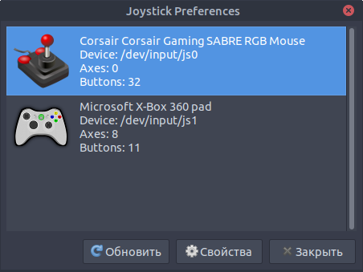

Dark Souls 2: SotFS Linux Fixes
2020-03-14
Controller doesn’t work
Some Corsair mice report themselves as a controller.
The game seems to use the “first” controller as the only controller. Verify using jstest-gtk.
Solution: Unplug the mouse before starting the game:
